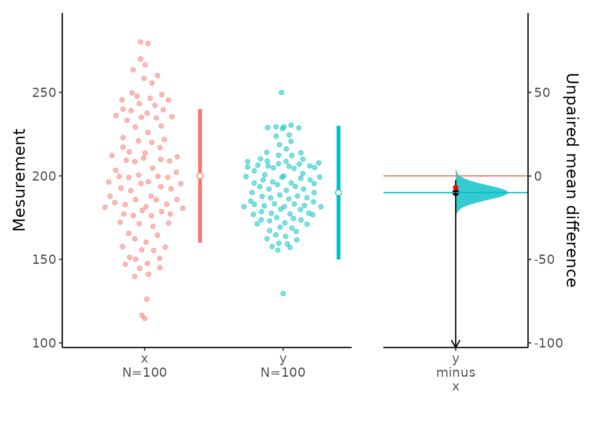
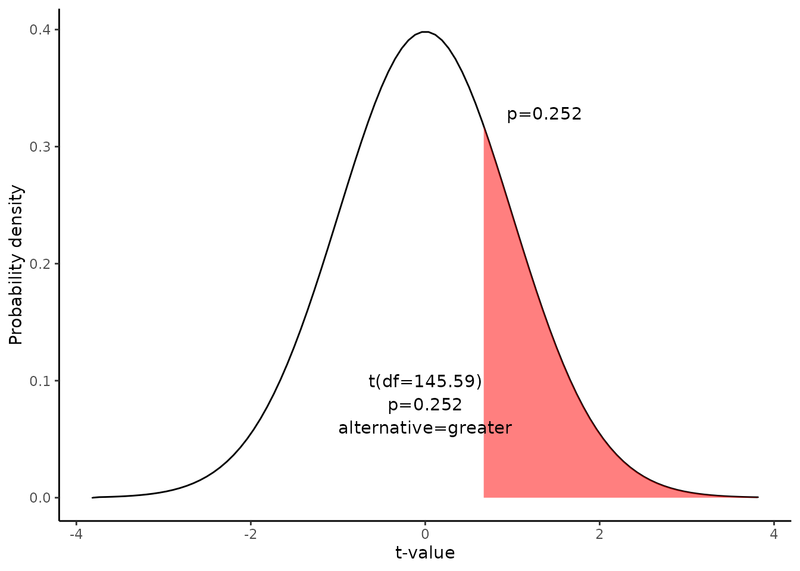

Hypothesis test for a difference between means
Source:vignettes/Hypothesis_test_Unpaired_Mean_diff.Rmd
Hypothesis_test_Unpaired_Mean_diff.RmdThis document is prepared automatically using the following R command.
library(interpretCI) |
Given Problem : One-Tailed Test
The local baseball team conducts a study to find the amount spent on refreshments at the ball park. Over the course of the season they gather simple random samples of 100 men and 100 women. For men, the average expenditure was $200, with a standard deviation of $40. For women, it was $190, with a standard deviation of $20. |
Hypothesis test
This lesson explains how to conduct a hypothesis test for the difference between two means. The test procedure, called the two-sample t-test, is appropriate when the following conditions are met:
The sampling method for each sample is simple random sampling.
The samples are independent.
Each population is at least 20 times larger than its respective sample.
-
The sampling distribution is approximately normal, which is generally the case if any of the following conditions apply.
The population distribution is normal.
The population data are symmetric, unimodal, without outliers, and the sample size is 15 or less.
The population data are slightly skewed, unimodal, without outliers, and the sample size is 16 to 40.
The sample size is greater than 40, without outliers.
This approach consists of four steps:
state the hypotheses
formulate an analysis plan
analyze sample data
interpret results.
1. State the hypotheses
The first step is to state the null hypothesis and an alternative hypothesis.
\[Null\ hypothesis(H_0): \mu_1-\mu_2 <= 7\] \[Alternative\ hypothesis(H_1): \mu_1-\mu_2 > 7\]
Note that these hypotheses constitute a one-tailed test. The null hypothesis will be rejected if the difference between sample means is too big..
2. Formulate an analysis plan.
For this analysis, the significance level is 95%. Using sample data, we will conduct a two-sample t-test of the null hypothesis.
3. Analyze sample data
Using sample data, we compute the standard error (SE), degrees of freedom (DF), and the t statistic test statistic (t).
\[SE=\sqrt{\frac{s^2_1}{n_1}+\frac{s^2_2}{n_2}}\] \[SE=\sqrt{\frac{40^2}{100}+\frac{20^2}{100}}\] \[SE=4.472\]
\[DF=\frac{(\frac{s_1^2}{n_1}+\frac{s_2^2}{n_2})^2}{\frac{(s_1^2/n_1)^2}{n_1-1}+\frac{(s_2^2/n_2)^2}{n_2-1}}\]
\[DF=\frac{(\frac{40^2}{100}+\frac{20^2}{100})^2}{\frac{(40^2/100)^2}{100-1}+\frac{(20^2/100)^2}{100-1}}\] \[DF=145.59\]
\[t=\frac{(\bar{x_1}-\bar{x_2})-d}{SE} = \frac{(200 -190)-7}{4.472}=0.671\]
where \(s_1\) is the standard deviation of sample 1, \(s_2\) is the standard deviation of sample 2, \(n_1\) is the size of sample 1, \(n_2\) is the size of sample 2, \(\bar{x_1}\) is the mean of sample 1, \(\bar{x_2}\) is the mean of sample 2, d is the hypothesized difference between population means, and SE is the standard error.
We can plot the mean difference.
plot(x)
Since we have a one-tailed test, the P-value is the probability that the t statistic having 145.59 degrees of freedom is or greater than 0.67.
We use the t Distribution curve to find p value.

4. Interpret results.
Since the P-value (0.252) is greater than the significance level (0.05), we cannot reject the null hypothesis.
Result of meanCI()
call: meanCI.default(n1 = 100, n2 = 100, m1 = 200, s1 = 40, m2 = 190, s2 = 20, mu = 7, alpha = 0.05, alternative = "greater")
method: Welch Two Sample t-test
alternative hypothesis:
true unpaired differences in means is greater than 7
Results
[38;5;246m# A tibble: 1 × 6
[39m
control test DF CI t p
[3m
[38;5;246m<chr>
[39m
[23m
[3m
[38;5;246m<chr>
[39m
[23m
[3m
[38;5;246m<chr>
[39m
[23m
[3m
[38;5;246m<chr>
[39m
[23m
[3m
[38;5;246m<chr>
[39m
[23m
[3m
[38;5;246m<chr>
[39m
[23m
[38;5;250m1
[39m x y 145.59 10.00 [95CI 2.60; Inf] 0.67082 0.2517Reference
The contents of this document are modified from StatTrek.com. Berman H.B., “AP Statistics Tutorial”, [online] Available at: https://stattrek.com/hypothesis-test/difference-in-means.aspx?tutorial=AP URL[Accessed Data: 1/23/2022].